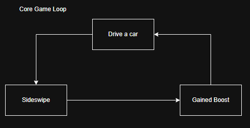
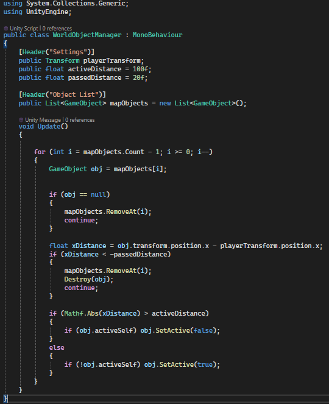
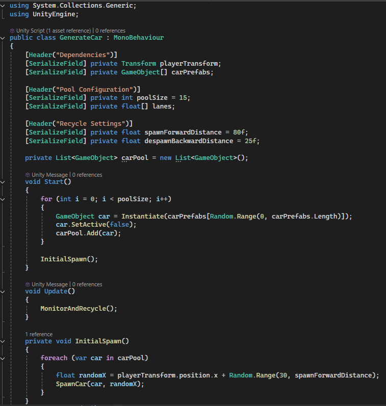
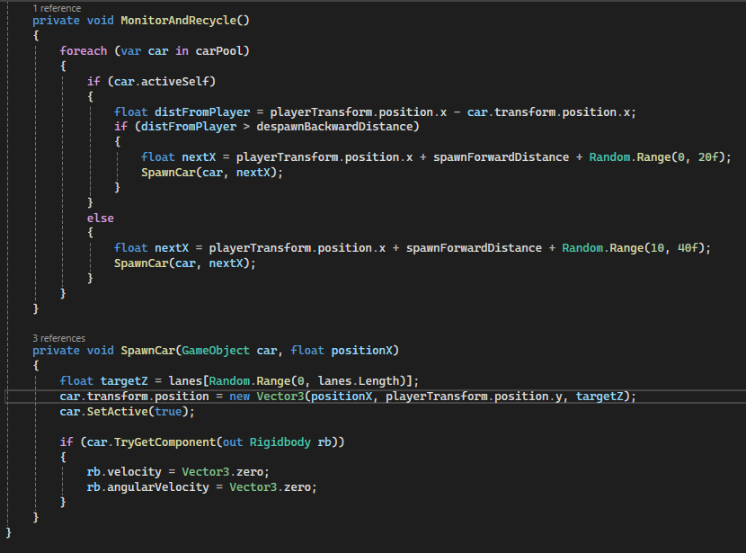

Dev by: Peeravit Boonsin, Teerapuwanai Chanachaisombud , Nonthapat Junsiri
To the Trip Game Machanic

Game Play
Features
WorldObjectManager This script optimizes resource management by dynamically toggling the visibility of environmental assets based on player proximity. Objects are activated only when the player approaches and are permanently destroyed once passed to free up memory. This system is ideal for levels with pre-defined object placements (Fixed Layouts).

After & Before
Reduce the size Scale down the Plane—which originally extended to the finish line—to cover only the player's immediate area, and have it follow the player to minimize the memory footprint and optimize space usage.
GenrateCar class In this class, I implemented a fixed-count vehicle system to manage traffic density. When the player passes a vehicle by a certain distance, the system repositions that vehicle ahead of the player for reuse. This Object Pooling and Spatial Recycling technique significantly optimizes performance by eliminating the need to constantly instantiate new objects, which would otherwise lead to frequent memory allocation (RAM) and potential performance spikes.


After & Before
Key Differences The legacy system relied on Destroying and Re-instantiating objects, which forced Unity to constantly allocate new RAM. By transitioning from destruction to Repositioning, we eliminate the need for new allocations. In summary: the new system Moves (Recycles) while the old system Destroys.
What I Learned
I learned that for better optimization, we don't always need to destroy GameObjects. If they are used repeatedly, we can simply reposition and reuse them instead. Additionally, by activating objects only when the player is within range, we can keep the scene light and avoid loading too many objects at once.